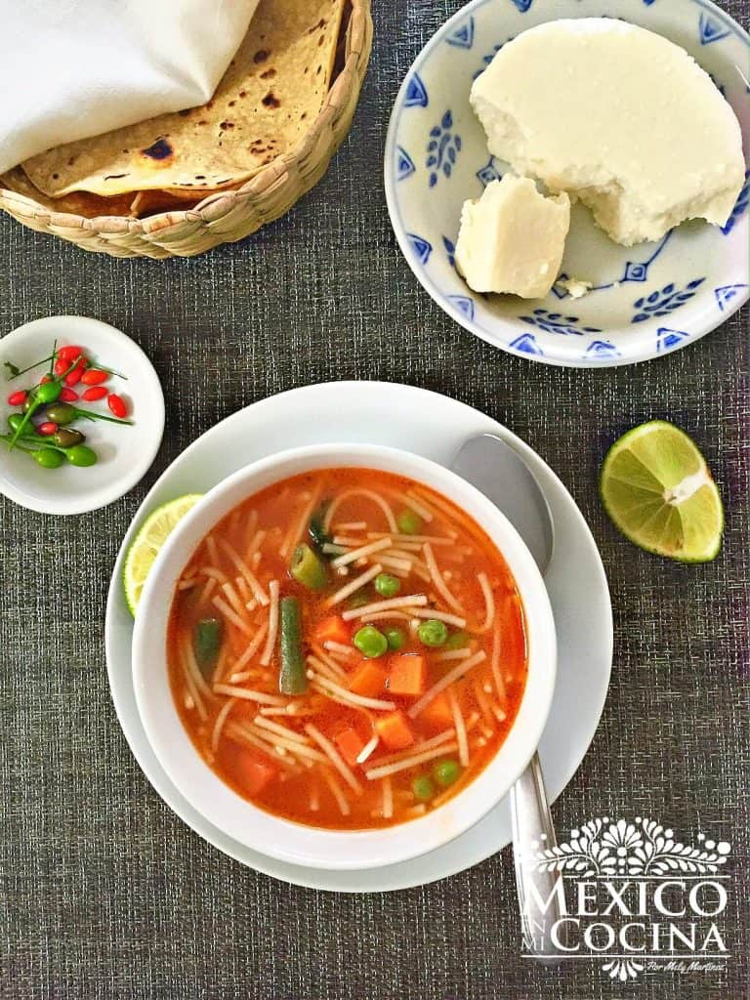

Sopa de Fideo

Plato de sopa de fideos
Otros nombres como se le conoce a esta sopa es: Sopa de Fideo Aguada, Sopa de Fideo Caldosa, o simplemente Sopa Aguada, ya que es bastante líquida.
Ingredientes
- Aceite vegetal
- Pasta de fideos
- Jitomates asados
- Diente de ajo grande
- Cebolla blanca
- Caldo de pollo o vegetales
- Sal y pimienta al gusto
Procedimiento
- Coloca los jitomates, el ajo y la cebolla asados en tu licuadora.Procesa hasta que tengas una mezcla suave. Cuela esta mezcla usando un colador en un recipiente y reserve. Algunas personas pasan la salsa de tomate por el colador, eso es al gusto personal tuyo y de como te gusta tu sopa de fideo.
- Calienta el aceite en una cacerola grande a fuego medio bajo y agrega el fideo. Fríe los fideos ligeramente, revolviendo a menudo, hasta que tengan un color dorado claro, 3-4 minutos.
- Vierta la mezcla de jitomate en la cacerola y cocina durante 1 minuto aproximadamente. Agrega el caldo de pollo (o agua mezclada con el consomé de pollo en polvo). Lleva a ebullición, luego reduzce la temperatura a media-baja y cubra la cacerola. Cocina a fuego lento hasta que los fideos estén suaves, aproximadamente 8 minutos. Sazona con sal y pimienta al gusto.
- Para servir, divida la sopa de fideo en tazones y adorna con Queso Fresco y aguacate en cubitos.